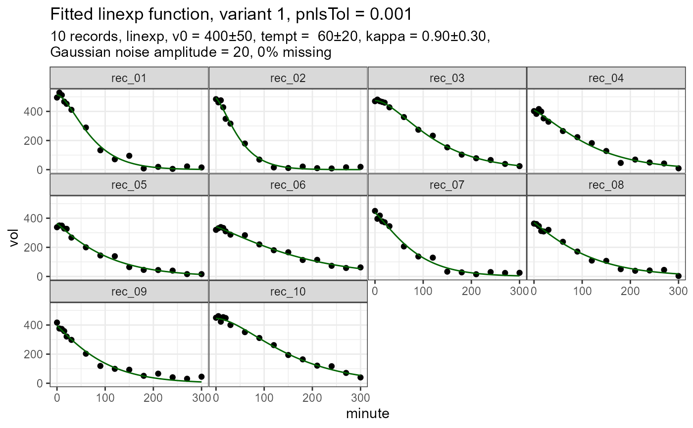

Compute coefficients v0, tempt and kappa of a mixed model fit to a linexp function with one grouping variable
Arguments
- d
A data frame with columns
recordRecord descriptor as grouping variable, e.g. patient IDminuteTime after meal or start of recording.volVolume of meal or stomach
- pnlsTol
The value of pnlsTol at the initial iteration. See
nlmeControlWhen the model does not converge,pnlsTolis multiplied by 5 and the iteration repeated until convergence orpnlsTol >= 0.5. The effective value ofpnlsTolis returned in a separate list item. When it is known that a data set converges badly, it is recommended to set the initialpnlsTolto a higher value, but below 0.5, for faster convergence.- model
linexp(default) orpowexp- variant
For both models, there are 3 variants
variant = 1The most generic version with independent estimates of all three parameters per record (random = v0 + tempt + kappa ~ 1 | record). The most likely to fail for degenerate cases. If this variant converges, use it.variant = 2Diagonal random effects (random = pdDiag(v0 + tempt + kappa) ~ 1; groups = ~record). Better convergence in critical cases. Note: I never found out why I have to use thegroupsparameter instead of the|; see also p. 380 of Pinheiro/Bates.variant = 3Since parameterskappaandbetarespectively are the most difficult to estimate, these are fixed in this variant (random = v0 + tempt ~ 1). This variant converges in all reasonable cases, but the estimates ofkappaandbetacannot be use for secondary between-group analysis. If you are only interested int50, you can use this safe version.
Value
A list of class nlme_gastempt with elements
coef, summary, plot, pnlsTol, message
coefis a data frame with columns:recordRecord descriptor, e.g. patient IDv0Initial volume at t=0temptEmptying time constantkappaParameterkappaformodel = linexpbetaParameterbetaformodel = powexpt50Half-time of emptyingslope_t50Slope in t50; typically in units of ml/minute
On error, coef is NULL
nlme_resultResult of the nlme fit; can be used for addition processing, e.g. to plot residuals or viasummaryto extract AIC. On error, nlme_result is NULL.plotA ggplot graph of data and prediction. Plot of raw data is returned even when convergence was not achieved.pnlsTolEffective value of pnlsTo after convergence or failure.messageString "Ok" on success, and the error message ofnlmeon failure.
Examples
suppressWarnings(RNGversion("3.5.0"))
set.seed(4711)
d = simulate_gastempt(n_record = 10, kappa_mean = 0.9, kappa_std = 0.3,
model = linexp)$data
fit_d = nlme_gastempt(d)
# fit_d$coef # direct access
coef(fit_d) # better use accessor function
#> record v0 tempt kappa t50 slope_t50 auc
#> 1 rec_01 514.2461 38.26584 0.9616006 62.74271 4.211768 38600.49
#> 2 rec_02 494.2128 29.05902 0.7793308 62.74271 4.211768 38600.49
#> 3 rec_03 474.9843 65.59110 0.9788889 62.74271 4.211768 38600.49
#> 4 rec_04 409.2697 70.62289 0.6728532 62.74271 4.211768 38600.49
#> 5 rec_05 364.8333 69.44228 0.4271142 62.74271 4.211768 38600.49
#> 6 rec_06 342.5196 104.72582 0.6051096 62.74271 4.211768 38600.49
#> 7 rec_07 438.8816 48.00338 0.6406112 62.74271 4.211768 38600.49
#> 8 rec_08 370.9072 72.24241 0.4837224 62.74271 4.211768 38600.49
#> 9 rec_09 396.3085 59.63862 0.5044935 62.74271 4.211768 38600.49
#> 10 rec_10 446.1453 82.81321 0.9665003 62.74271 4.211768 38600.49
coef(fit_d, signif = 3) # Can also set number of digits
#> record v0 tempt kappa t50 slope_t50 auc
#> 1 rec_01 514 38.3 0.962 62.7 4.21 38600
#> 2 rec_02 494 29.1 0.779 62.7 4.21 38600
#> 3 rec_03 475 65.6 0.979 62.7 4.21 38600
#> 4 rec_04 409 70.6 0.673 62.7 4.21 38600
#> 5 rec_05 365 69.4 0.427 62.7 4.21 38600
#> 6 rec_06 343 105.0 0.605 62.7 4.21 38600
#> 7 rec_07 439 48.0 0.641 62.7 4.21 38600
#> 8 rec_08 371 72.2 0.484 62.7 4.21 38600
#> 9 rec_09 396 59.6 0.504 62.7 4.21 38600
#> 10 rec_10 446 82.8 0.967 62.7 4.21 38600
# Avoid ugly ggplot shading (not really needed...)
library(ggplot2)
theme_set(theme_bw() + theme(panel.spacing = grid::unit(0,"lines")))
# fit_d$plot # direct access is possible
plot(fit_d) # better use accessor function
